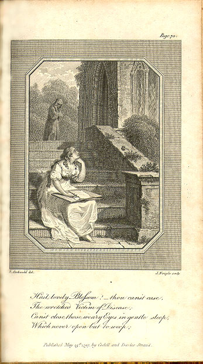

contents | previous | next
NOT for the promise of the labour'd field, Not for the good the yellow harvests yield, I bend at Ceres' shrine; For dull, to humid eyes, appear The gold glories of the year, Alas! — a melancholy worship's mine. 69 I hail the goddess for her scarlet flower!Thou brilliant weed, That dost so far exceed The richest gifts gay Flora can bestow: Heedless I pass'd thee, in life's morning hour, (Thou comforter of woe) Till sorrow taught me to confess thy power. In early days, when Fancy cheats, A varied wreath I wove Of laughing Spring's luxuriant sweets, To deck ungrateful Love: The rose, or thorn, my labours crown'd, As Venus smiled, or Venue frown'd; 70 But Love, and Joy, and all their train, are flown;E'en languid Hope no more is mine, And I will sing of thee alone, Unless, perchance, the attributes of Grief, The cypress bud, and willow leaf, Their pale funereal foliage blend with thine. Hail, lovely blossom! — thou can'st ease The wretched victims of Disease; Can'st close those weary eyes in gentle sleep, Which never open but to weep; For, oh! thy potent charm Can agonizing Pain disarm; Expel imperious Memory from her feat, And bid the throbbing heart forget to beat. [plate]
 71 Soul-soothing plant! that can such blessings give,By thee the mourner bears to live! By thee the hopeless die! Oh! ever "friendly to despair," Might Sorrow's pallid votary dare, Without a crime, that remedy implore, Which bids the spirit from its bondage fly, I'd court thy palliative aid no more; No more I'd sue that thou should'st spread, Thy spell around my aching head, But would conjure thee to impart Thy balsam for a broken heart; And by thy soft Lethean power, (Inestimable flower) Burst these terrestrial bonds, and other regions thy. |